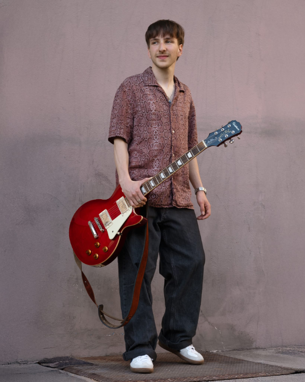
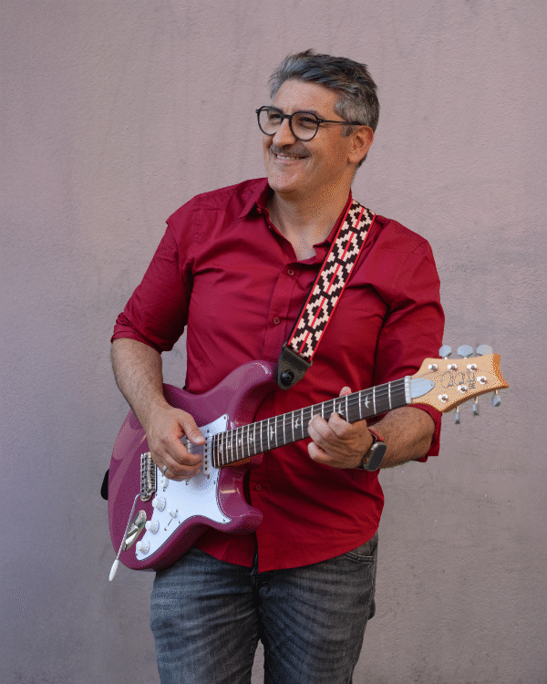
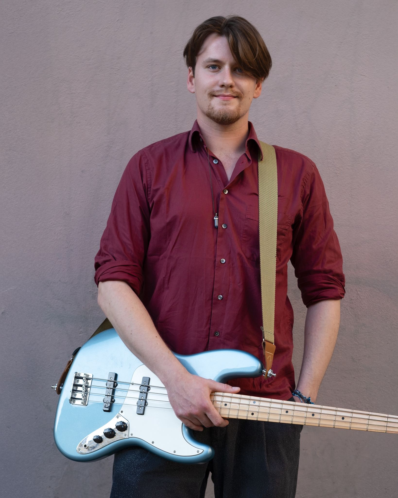
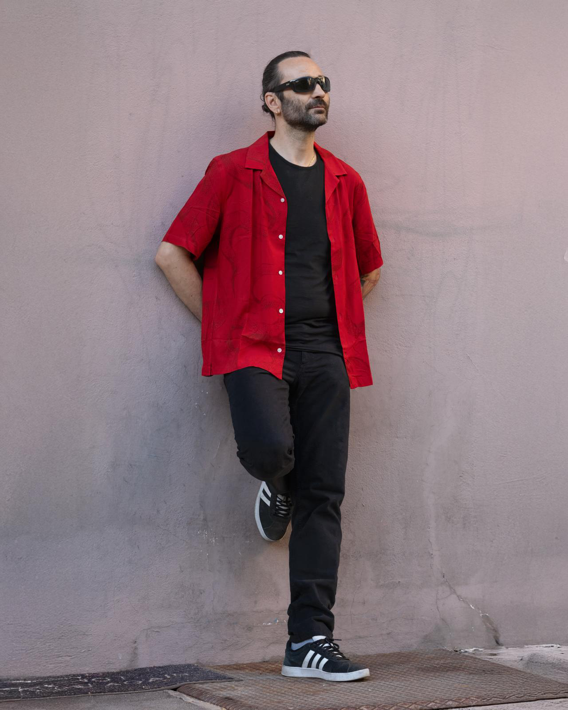

Five voices on sound
Der Name LITSCHI klingt vielleicht nach rosarotem Pop-Rock, doch dahinter schlummert die Seele fünf kreativer Köpfe aus den unterschiedlichsten musikalischen Sozialisierungen. In ihren Songs formt die Basler Band einen Mix von Pop-Hooks, Rock-Energie und Blues-Tiefe zu einem Sound, der sich keine Schublade sucht, weil er keine braucht. LITSCHI ist ein generationsübergreifender Sound, den die zwischen 24 und 49 Jahre alten Mitglieder verkörpern und ihr Publikum von Jung bis Alt begeistern.
The name LITSCHI might sound like rosy pink pop-rock, but behind it lies the soul of five creative minds shaped by the most diverse musical backgrounds. In their songs, the Basel-based band blends pop hooks, rock energy and blues depth into a sound that doesn't look for a pigeonhole – because it doesn't need one. LITSCHI is a cross-generational sound, embodied by members aged between 24 and 49, that captivates audiences young and old alike.
Gesang / Voice
Rau, direkt und mit einer Energie, die einen sofort packt
Raw, direct, and with an energy that grabs you instantly
Charlotte – oder Charlie, wie sie alle nennen – ist eine Stimme, die man nicht so schnell vergisst. Rau, direkt und mit einer Energie, die einen sofort packt: Wenn sie loslegt, spürt man jeden Ton im Bauch. Ihre rockige, punkige Seite ist wild und ehrlich – keine Verstellung, keine Filter, nur pure Überzeugung.
Charlotte – or Charlie, as everyone calls her – is a voice you won't forget easily. Raw, direct, and with an energy that grabs you instantly: when she lets loose, you feel every note in your gut. Her rocky, punky side is wild and honest – no pretence, no filters, just pure conviction.
Gitarre und Keyboard / Guitar and Keys
Die Welt der Klänge, Melodien und Geschichten – Robins Welt
A World of Melodies, Sounds & Stories – Robin's World

Musik hat ihn früh gefunden – und er hat sie nie wieder losgelassen. Schon von klein auf zog ihn die Welt der Klänge, Melodien und Geschichten in ihren Bann. Was als Neugier begann, wurde schnell zur Leidenschaft. Heute bewegt er sich zwischen Gitarre und Keyboard mit einer Selbstverständlichkeit, die sein junges Alter vergessen lässt. Doch es ist sein Talent fürs Songschreiben, das ihn wirklich auszeichnet. Für LITSCHI bringt er mehr als Können. Er bringt eine Vision – und eine Kreativität, die mit jedem Song weiter wächst.
He discovered music early – and music, it seems, discovered him right back. From a young age, he was drawn to sounds, melodies and the stories that songs can tell. What started as curiosity quickly became a calling. Today he moves between guitar and keys with effortless ease, bringing a musical sensitivity that belies his years. But it is his gift for songwriting that truly sets him apart. For LITSCHI, he brings more than talent. He brings vision – and a creativity that continues to grow with every song he writes.
Gitarre / Guitar.
Er holt Töne aus seiner Gitarre, die gleichzeitig überraschend und stimmig klingen.
He coaxes sounds out of his guitar that feel both surprising and inevitable.

Nes besitzt eine Gabe, die sich schwer in Worte fassen lässt – aber unmöglich zu überhören ist. Wo andere sich mit dem Naheliegenden zufriedengeben, findet er immer einen Weg, etwas musikalisch interessant zu gestalten. Ein anderes Voicing, eine unerwartete Wendung, ein Detail, das plötzlich alles zum Leuchten bringt. Er holt Töne aus seiner Gitarre, die gleichzeitig überraschend und stimmig klingen. Für LITSCHI ist Nes der Gitarrist, der nie aufhört zu suchen – und immer etwas findet, das es wert ist, gehört zu werden.
Nes has a gift that is hard to put into words – but impossible to miss when you hear it. Where others might settle for the obvious, he always finds a way to make things musically interesting. A different voicing, an unexpected turn, a detail that suddenly makes everything click. He coaxes sounds out of his guitar that feel both surprising and perfectly natural. For LITSCHI, Nes is the guitarist who never stops searching – and always finds something worth hearing.
Bass / Bass
Paul macht keine Musik – er ist Musik.
Paul doesn't make music – he is music.

Paul macht keine Musik – er ist Musik. Dieser Unterschied zählt, denn wer jemals mit ihm auf einer Bühne gestanden hat, spürt es sofort. Wie ein Dirigent hat Paul stets das grosse Ganze im Ohr. Er hört zu, er fühlt, er lenkt – nie aufdringlich, nie dominierend, aber immer genau dort präsent, wo es gebraucht wird. Sein Bass hält nicht bloss den Rhythmus – er gibt der Band den Boden unter den Füssen, den Atem und die Richtung. Mit Paul spielt LITSCHI nicht einfach zusammen. Sie bewegen sich zusammen.
Paul doesn't make music – he is music. That distinction matters, because anyone who has ever shared a stage with him feels it immediately. Like a conductor, Paul has an ear for the whole picture. He listens, he feels, he guides – never imposing, never dominating, but always present in exactly the right way. His bass doesn't just keep the rhythm; it gives the band its footing, its breath, its direction. With Paul, LITSCHI doesn't just play together. They move together.
Schlagzeug / Drums
Er verkompliziert nichts. Er überspielt nichts.
He doesn't overcomplicate. He doesn't overplay.

Manu bringt etwas mit, das man nicht lernen kann – Erfahrung. Jahre hinter dem Schlagzeug haben ihm eine ruhige, pragmatische Herangehensweise gegeben, die alles um ihn herum besser macht. Er verkompliziert nichts. Er überspielt nichts. Er gibt jedem Song genau das, was er braucht. Sein Takt ist der Herzschlag von LITSCHI. Aber mehr noch: Manu hört zu. Er nimmt jede Nuance auf, jede Verschiebung in der Energie, jeden unausgesprochenen Moment – und reagiert mit genau dem richtigen Schlag, dem richtigen Akzent, der richtigen Stille. Nichts ist verschwendet. Alles hat Gewicht. Mit Manu am Schlagzeug klingt die Band nicht nur enger zusammen. Sie klingt stärker.
Manu brings something that can't be taught – experience. Years behind the kit have given him a calm, pragmatic approach that makes everything around him better. He doesn't overcomplicate. He doesn't overplay. He simply gives each song exactly what it needs. His sense of timing is the heartbeat of LITSCHI. But more than that, Manu listens. He picks up on every nuance, every shift in energy, every unspoken moment – and responds with precisely the right stroke, the right accent, the right silence. Nothing is wasted. Everything counts. With Manu on drums, the band doesn't just sound tighter. They sound stronger.
Just press play!